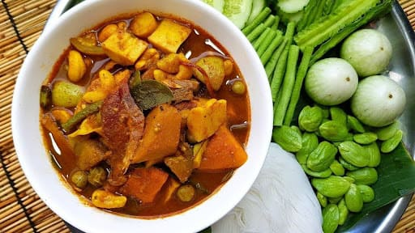

เเกงขมิ้นไตปลาโบราณ

แกงขมิ้นไตปลาโบราณ เป็นอาหารพื้นบ้านของภาคใต้ มีลักษณะเป็นแกงน้ำขลุกขลิก สีเหลืองจากขมิ้น ไม่ใส่กะทิ รสชาติเด่นคือเค็มและเผ็ด
กลิ่นหอมของสมุนไพร โดยใช้ ไตปลา ซึ่งได้จากการหมักเครื่องในปลาเป็นวัตถุดิบหลัก
อาหารชนิดนี้สะท้อนภูมิปัญญาชาวบ้านในการใช้ทรัพยากรให้คุ้มค่า โดยเฉพาะชุมชนชาวประมงที่ต้องการถนอมอาหารไว้กินได้นาน ขมิ้น ตะไคร้ พริก และสมุนไพรต่าง ๆ
ช่วยดับกลิ่นคาว เพิ่มรสชาติ และช่วยในการย่อยอาหาร เหมาะกับสภาพอากาศร้อนชื้นของภาคใต้